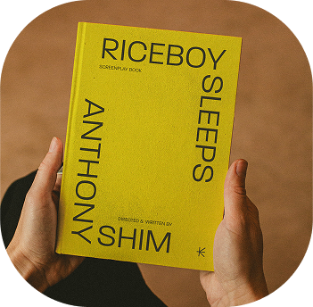
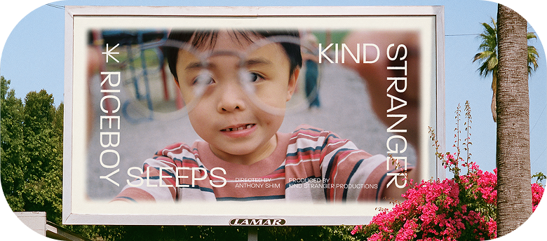
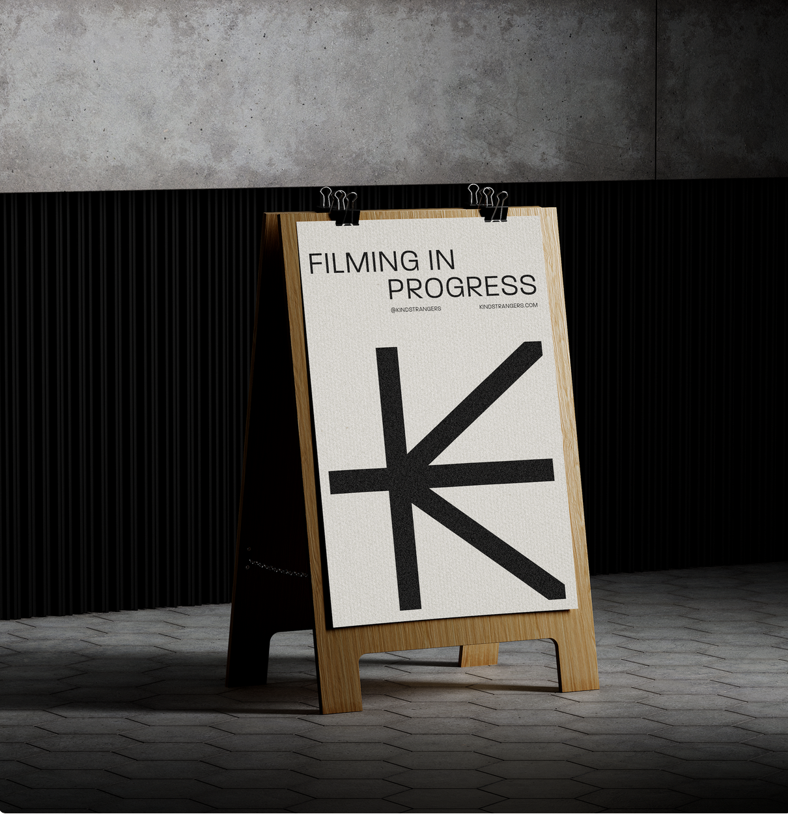
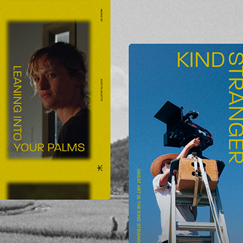
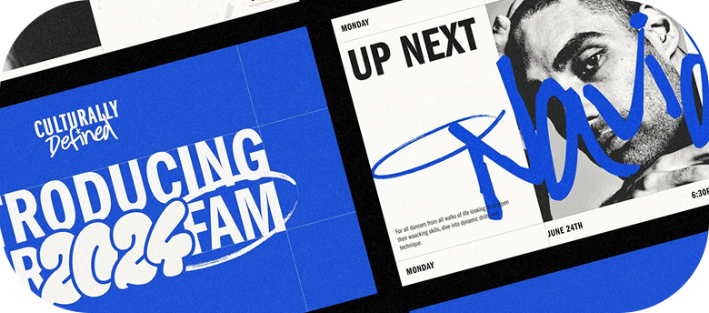
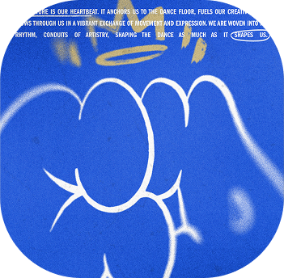
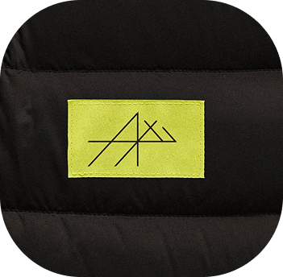
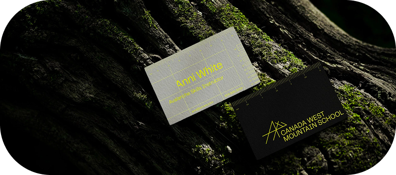

Kind Stranger is a production company born from the belief that stories have the power to connect us in profound ways.
It's a space where creativity and connection thrive, where storytellers and audiences meet on common ground, and where the magic of shared experiences comes to life.
Gallery & More
MORE ON — Kind Stranger
BRAND IDENTITY
DESIGNED AT ZAK
While working at ZAK, I had the opportunity to work on the creation of Kind Stranger's brand identity, from concept ideation to final execution. As part of a collaborative team, we developed an identity that feels deeply human, approachable, and evocative.
The design draws from the roots of filmmaking—the grainy beauty of 16mm film, the tactile charm of classic film reels, and the timeless dance of light and shadow.


At the heart of the identity is an unconventional type system that embodies the spirit of convergence—a meeting of ideas, perspectives, and talents, all unified by a shared passion for storytelling. Every detail was carefully considered to capture the humanity, grit, and raw beauty that define both the filmmaking process and the stories it illuminates.



Kind Stranger's identity isn't just a visual expression; it's a celebration of the connections we form through storytelling. It's a reminder that, in the end, what makes a story powerful is its ability to reflect the human spirit—and bring us closer to one another.


Culturally Defined is an adult-focused Vancouver dance studio rooted in community, growth and above all - a good fucking time.
It balances rigorous training with one of the most inviting and supportive communities. Offering a space where creativity, personal growth, and movement come together in a setting that feels both grounded and welcoming.
Gallery & More


Canada West Mountain School (CWMS) offers nothing short of an exhilarating journey encompassing mountaineering, wilderness survival, and conquering Squamish rocks.
With a legacy deeply rooted in these pursuits within the breathtaking landscapes of British Columbia, CWMS has served as a beacon for adventure enthusiasts seeking to experience and learn about the untamed beauty of Canada. However, recognizing the evolving needs of its audience and desiring to better capture the adventurous spirit of its brand, came the journey to reinvigorate its visual identity through a victitious rebrand.